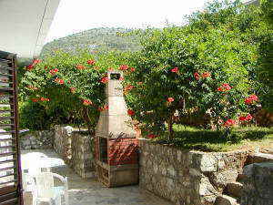

APARTMENT TEDO

| |
| |
 Self-Catering
Holiday rental - Apartment Tedo
Self-Catering
Holiday rental - Apartment Tedo


Apartment Tedo is four semi-detached houses of 64 m2 each. They share
a garden and two rear terraces; each terrace has a big barbecue. At
the front of the house, each house has a roofed terrace at the front
door and a balcony in front of the master bedroom.
From both the terrace and the balcony there is a wonderful view over
the small islands and the Peljesac Peninsula.
See rental prices and availability

The Houses
The lower floor has a living room and a kitchen that is well-equipped
with dishwasher and a big fridge and a freezer. The upper floor has
two bedrooms with air conditioning and a bathroom with a washing
machine. The master bedroom has a safety deposit box and a door to a
balcony with a sea view, and the family bedroom has a door to the
terrace and the garden.
There is free WiFi access from all houses and Chrome cast connection.
Tedo-1, Tedo-2 and Tedo-3 are non-smoking houses. You may smoke in
Tedo-4.

Each house has:
- Two bedrooms with air-conditioning
- Washing machine and hair dryer
- Free WiFi, wireless internet access
- 32" flat screen satellite TV with Chromecaste
- DVD, movies, games and books
- Coffee machine and microwave oven
- Dishwashing machine
- Two ring hob
- Big fridge and freezer
- Electric kettle and toaster
- Fully equipped kitchen
- Linen and 2 towels on each bed
- Safety box in bedroom
- Baby bed, chair and blender (on request)
- Emergency light
Outdoor each house has:
- Garden table and six chairs
- Caf� table and two chairs on the terrace
- Caf� table and two chairs on the balcony
- Cushions for all chairs
Common outdoor:
- Sun terrace and loungers
- Garden table and chairs
- Caf� table and chairs
- Two big garden grills
- Childrens toys and our tortoises :)
Distances from the house to:
- The sea: 40 m
- Beach: 300 m
- Supermarket: 40 m
- Restaurant: 30 m
- Coastal Road: 800 m
- Dubrovnik: 70 km
- Split: 130 km
Garden

Behind the houses, there is a shared garden and a
terrace with a barbecue. Each house has a garden table with six chairs
in front of their own house.
There are two more terraces. The upper one has sun beds and another
big barbecue and caf� tables with chairs.
The middle one is with mandarin-, orange- and lemon trees and our tortoises live here.
 The
tortoises love to be feed with green salad and tomatoes. They are not
always easy to find because they mostly sit still and are well
camouflaged, but if they are thirsty or hungry, and you bring them
water or some of their favorite food; they can move with a surprising
speed.
The
tortoises love to be feed with green salad and tomatoes. They are not
always easy to find because they mostly sit still and are well
camouflaged, but if they are thirsty or hungry, and you bring them
water or some of their favorite food; they can move with a surprising
speed.
See rental prices and availability
Living Room and Kitchen
 The living room downstairs
has a sofa for two persons, a coffee table and a dining table with six
chairs. There is a 32" TV with satellite receiver (Astra 1). You can
receive channels in English like BBC World, Sky News, CNN and a large
number of channels in German, Italian and French.
The living room downstairs
has a sofa for two persons, a coffee table and a dining table with six
chairs. There is a 32" TV with satellite receiver (Astra 1). You can
receive channels in English like BBC World, Sky News, CNN and a large
number of channels in German, Italian and French.
Under the TV, there is a DVD player, some movies, many novels, maps
and our book with advice and directions about how you can get the best
out of your stay. There are printouts in the book of all the
sightseeing advice you may find here on the Sightseeing site.

The kitchen is in open
connection with the living room.
There is a dishwasher, big fridge, freezer, hood, electric kettle,
microwave oven, coffee machine and whatever tableware you may need for
six people is in the drawers and cupboards.
Front Entrance

It is possible to park in front of the houses. From the front terrace,
there is a nice view over the bay to the Peljesac Peninsular. There
are two chairs here and a small coffee table. It is a great place to
sit if you want to follow the life in the village and want to be in
the shadow.
There is a gate at the top of the stairs leading from the terrace, so
small children cannot run into the road. There is not much traffic,
but the occasional car does pass by.

The Bedrooms and Bathroom
The master bedroom on the upper floor has bed side tables, closet, clock radio, air conditioning, safety deposit box and exit to a balcony, overlooking the sea. There are two chairs and a coffee table on the balcony, and it is a great place to have a drink when the sun sets in the west.
In the master bedroom, it is possible to have a baby bed on request.
In House #4 the small bedroom towards the gardens has the double bed,
which may be an advantage for a family with 4 children.

The bathroom is between the two bedrooms and with entrance
from the stair's landing. There is a comfortable shower cabin, a hair
dryer and a washing machine that is easy to operate.

The family bedroom has a bunk bed (full-size
mattresses, 200X90cm), table, closet, air conditioning and a sofa that
may be converted into a double bed. There is a door to the garden from
this bedroom.
Both the sofa and the bunk beds are full size and comfortable for
adults.
In the house #4 this room has a double bed, and the sofa and bunk bed
is in the big bedroom.
See a short video and meet our tortoises

Click here to see more pictures from Apartment Tedo
Go to top of page
Rental prices and availability
| Month | April, May, June and September, October | July and August |
| Price per house/day | 75 Euro | 110 Euro |
| Minimum stay | 2 days | 3 days |
All utilities, final cleaning, tourist tax and all linen and towels are included in the rental price.
Availability for all four houses
Rent a Car
If you need to rent a car Economy Car Rental will give you the best offer by scanning many rental companies.
We believe in responsible tourism and protection of the environment
We employ local people, participate in community activities and give 2% of our total revenue to charity through the local church in Slivno Parish.
Insurance
When you stay in Apartment Tedo all persons are covered by our insurance in Croatia Insurance.
- Property damage - 10.000 Kuna
- People damage - 20.000 Kuna
- Death - 100.000 Kuna
- Invalidity - 200.000 Kuna
Komarna Rejser (Komarna Travels) has an Extended Liability insurance
with ERV in Denmark. It guarantees that we can always support an
emergency. Read more under terms and
conditions.
We strongly recommend that you also take out a personal health and cancellation insurance for your holidays.